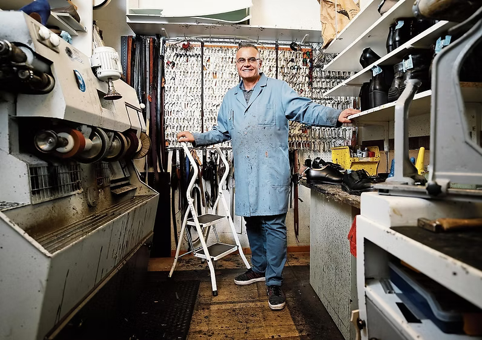

Über uns
Beruflicher Werdegang
Ich bin gebürtiger Syrier und wohne seit 30 Jahren im Kanton Zug. Zusammen mit meiner Frau zogen wir fünf Kinder gross, die allesammt in Baar aufgewachsen sind.
Bevor ich mich dem Schuhmacher-Handwerk gewidmet habe, arbeitete ich in der Gastronomie- und in der Textilreinigungsbranche.
Nach einer Ausbildung als Schuhmacher, eröffnete ich mir im Jahre 2004 mein eigenes Schuhgeschäft in Luzern.
Da ich mich in Baar zuhause fühle, kehrte ich in 2008 in den Kanton Zug zurück. Ich gründete am Bahnhof Baar mein Geschäft, welches ich 10 Jahre geführt habe. Ab Dezember 2018 ziehe ich mein Geschäft nach Zug an die Poststrasse.
Lesen Sie mehr dazu in diesem Artikel der Luzerner Zeitung.
